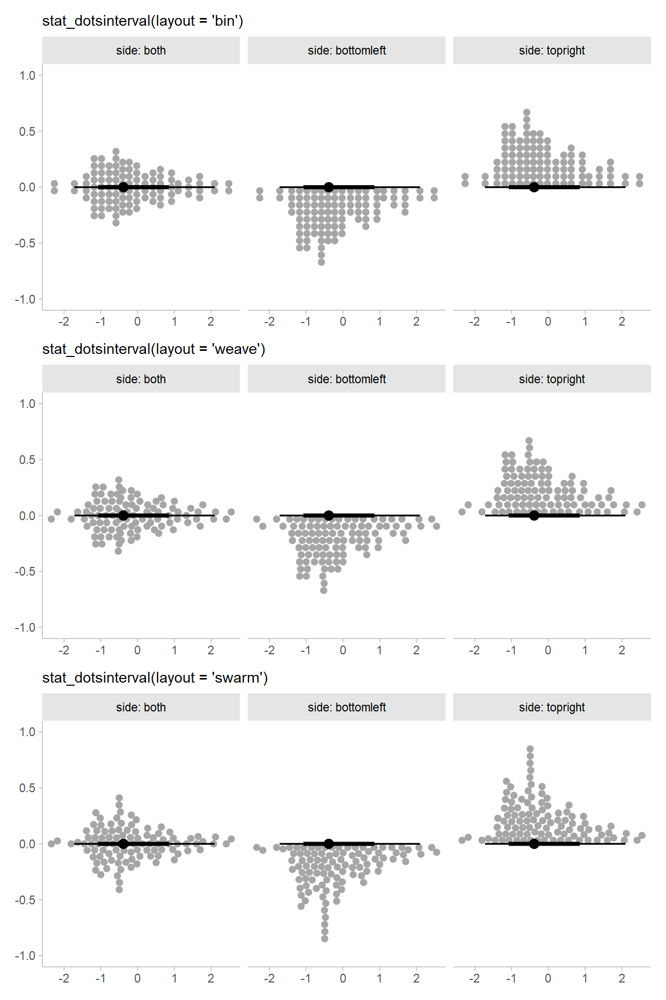
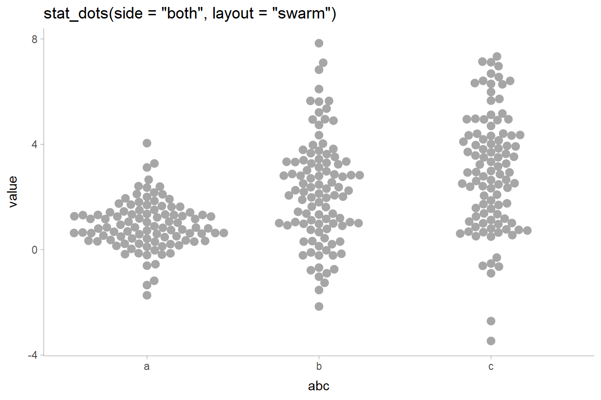
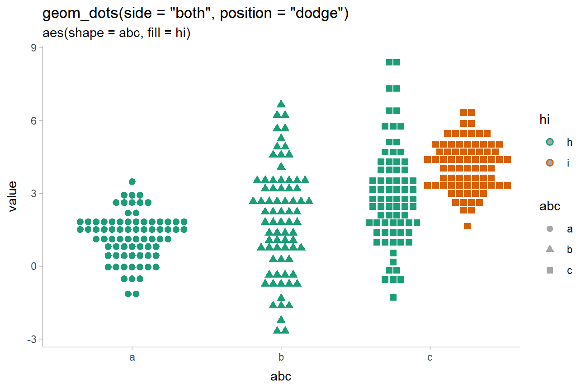
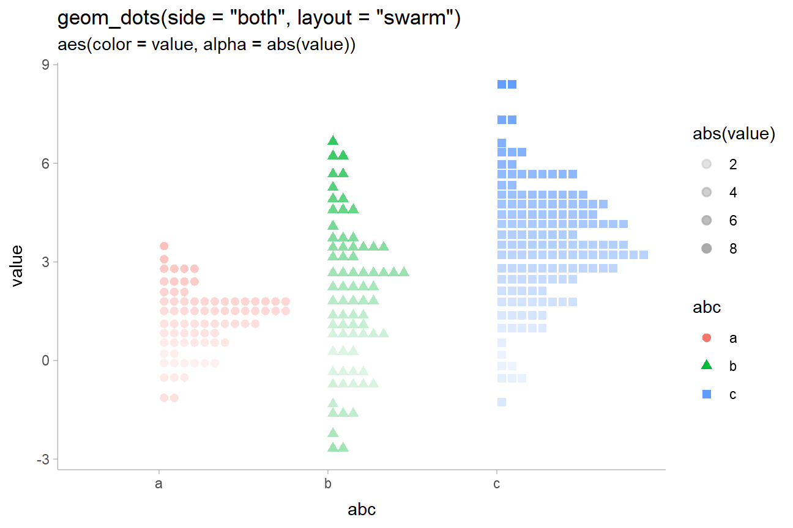
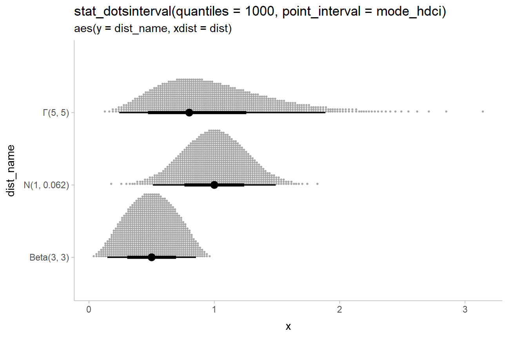
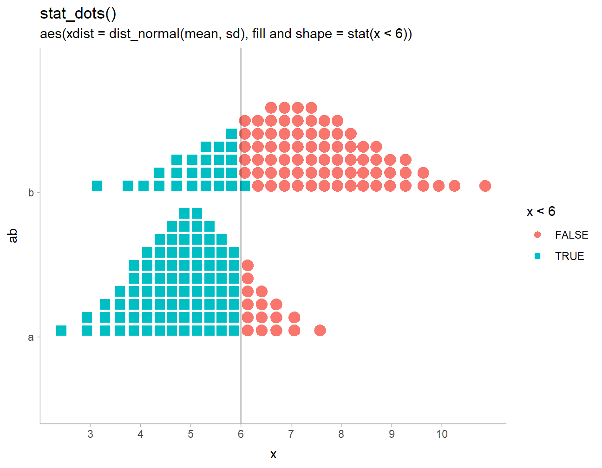
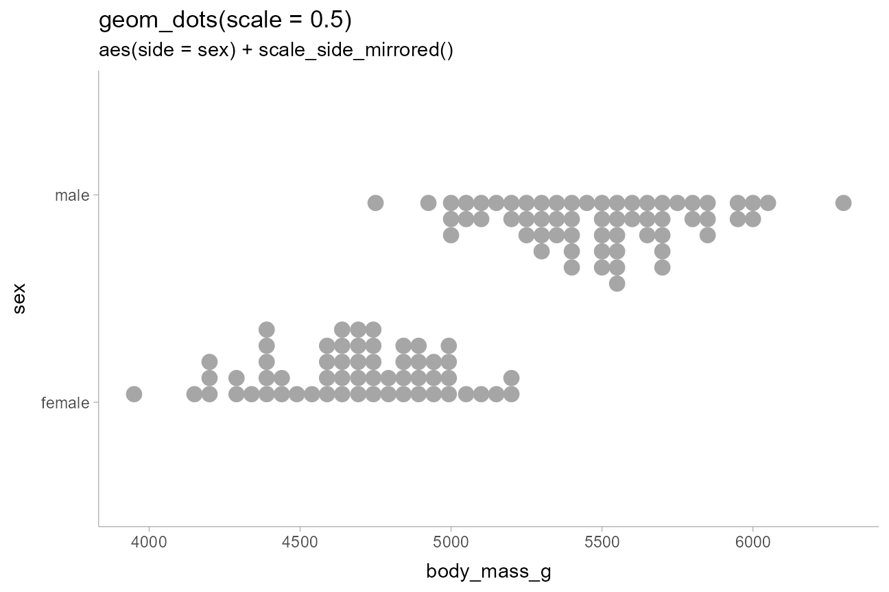

Dots + interval stats and geoms
Matthew Kay
2022-02-13
Source:vignettes/dotsinterval.Rmd
dotsinterval.RmdIntroduction
This vignette describes the dots+interval geoms and stats in ggdist. This is a flexible sub-family of stats and geoms designed to make plotting dotplots straightforward. In particular, it supports a selection of useful layouts (including the classic Wilkinson layout, a weave layout, and a beeswarm layout) and can automatically select the dot size so that the dotplot stays within the bounds of the plot.
Anatomy of geom_dotsinterval()
The dotsinterval family of geoms and stats is a sub-family of slabinterval (see vignette("slabinterval")), where the “slab” is a collection of dots forming a dotplot and the interval is a summary point (e.g., mean, median, mode) with an arbitrary number of intervals.
The base geom_dotsinterval() uses a variety of custom aesthetics to create the composite geometry:

Depending on whether you want a horizontal or vertical orientation, you can provide ymin and ymax instead of xmin and xmax. By default, some aesthetics (e.g., fill, color, size, alpha) set properties of multiple sub-geometries at once. For example, the color aesthetic by default sets both the color of the point and the interval, but can also be overridden by point_color or interval_color to set the color of each sub-geometry separately.
Due to its relationship to the geom_slabinterval() family, aesthetics specific to the “dots” sub-geometry are referred to with the prefix slab_. When using the standalone geom_dots() geometry, it is not necessary to use these custom aesthetics:

geom_dotsinterval() is often most useful when paired with stat_dotsinterval(), which will automatically calculate points and intervals and map these onto endpoints of the interval sub-geometry.
stat_dotsinterval() and stat_dots() can be used on two types of data, depending on what aesthetic mappings you provide:
Sample data; e.g. draws from a data distribution, bootstrap distribution, Bayesian posterior distribution (or any other distribution, really). To use the stats on sample data, map sample values onto the
xoryaesthetic.Distribution objects and analytical distributions. To use the stats on this type of data, you must use the
xdist, orydistaesthetics, which take distributional objects,posterior::rvar()objects, or distribution names (e.g."norm", which refers to the Normal distribution provided by thednorm/pnorm/qnormfunctions). When used on analytical distributions (e.g.distributional::dist_normal()), thequantilesargument determines the number of quantiles used (and therefore the number of dots shown); the default is100.
All dotsinterval geoms can be plotted horizontally or vertically. Depending on how aesthetics are mapped, they will attempt to automatically determine the orientation; if this does not produce the correct result, the orientation can be overridden by setting orientation = "horizontal" or orientation = "vertical".
Controlling dot layout
Size and layout of dots in the dotplot are controlled by four parameters: scale, binwidth, dotsize, and stackratio.

scale: Ifbinwidthis not set (isNA), then thebinwidthis determined automatically so that the height of the highest stack of dots is less thanscale. The default value ofscale, 0.9, ensures there is a small gap between dotplots when multiple dotplots are drawn.-
binwidth: The width of the bins used to lay out the dots:-
NA(default): Usescaleto determine bin width. - A single numeric or
unit(): the exact bin width to use. If it isnumeric, the bin width is expressed in data units; useunit()to specify the width in terms of screen coordinates (e.g.unit(0.1, "npc")would make the bin width 0.1 normalized parent coordinates, which would be 10% of the plot width.) - A 2-vector of numerics or
unit()s giving an acceptable minimum and maximum width. The automatic bin width algorithm will attempt to find the largest bin width between these two values that also keeps the tallest stack of dots shorter thanscale.
-
dotsize: The size of the dots as a percentage ofbinwidth. The default value is1.07rather than1. This value was chosen largely by trial and error, to find a value that gives nice-looking layouts with circular dots on continuous distributions, accounting for the fact that a slight overlap of dots tends to give a nicer apparent visual distance between adjacent stacks than the precise value of1.stackratio: The distance between the centers of dots in a stack as a proportion of the height of each dot.stackratio = 1, the default, mean dots will just touch;stackratio < 1means dots will overlap each other, andstackratio > 1means dots will have gaps between them.
Side and layout
The side aesthetic allows you to adjust the positioning and direction of the dots:
-
"top","right", or"topright": draw the dots on the top or on the right, depending onorientation -
"bottom","left", or"bottomleft": draw the dots on the bottom or on the left, depending onorientation -
"topleft": draw the dots on top or on the left, depending onorientation -
"bottomright": draw the dots on the bottom or on the right, depending onorientation -
"both": draw the dots mirrored, as in a “beeswarm” plot.
The layout parameter allows you to adjust the algorithm used to place dots:
-
"bin"(default): places dots on the off-axis at the midpoint of their bins as in the classic Wilkinson dotplot. This maintains the alignment of rows and columns in the dotplot. This layout is slightly different from the classic Wilkinson algorithm in that: (1) it nudges bins slightly to avoid overlapping bins and (2) if the input data are symmetrical it will return a symmetrical layout. -
"weave": uses the same basic binning approach of “bin”, but places dots in the off-axis at their actual positions (modulo overlaps, which are nudged out of the way). This maintains the alignment of rows but does not align dots within columns. Does not work well whenside = "both". - “swarm”: uses the
"compactswarm"layout frombeeswarm::beeswarm(). Does not maintain alignment of rows or columns, but can be more compact and neat looking, especially for sample data (as opposed to quantile dotplots of theoretical distributions, which may look better with"bin"or"weave").
That yields these combinations (amongst many others):
set.seed(1234)
x = rnorm(100)
make_plot = function(layout) {
expand.grid(
x = x,
side = c("topright", "both", "bottomleft"),
stringsAsFactors = FALSE
) %>%
ggplot(aes(side = side, x = x)) +
stat_dotsinterval(layout = layout) +
facet_grid(~ side, labeller = "label_both") +
labs(
subtitle = paste0("stat_dotsinterval(layout = '", layout, "')"),
x = NULL,
y = NULL
)
}
make_plot("bin") /
make_plot("weave") /
make_plot("swarm")
Beeswarm plots
Thus, it is possible to create the beeswarm plots by using stat_dots() with side = "both":
set.seed(1234)
abc_df = data.frame(
value = rnorm(300, mean = c(1,2,3), sd = c(1,2,2)),
abc = c("a", "b", "c")
)
abc_df %>%
ggplot(aes(x = abc, y = value)) +
stat_dots(side = "both") +
ggtitle('stat_dots(side = "both")')
side = "both" also tends to work well with the "swarm" layout for a more classic-looking “beeswarm” plot:
abc_df %>%
ggplot(aes(x = abc, y = value)) +
stat_dots(side = "both", layout = "swarm") +
ggtitle('stat_dots(side = "both", layout = "swarm")')
Varying color, fill, shape, and size
Aesthetics like color, fill, shape, and size can be varied over the dots. For example, we can vary the fill aesthetic to create two subgroups, and use position = "dodge" to dodge entire “swarms” at once so the subgroups do not overlap:
set.seed(12345)
abcc_df = data.frame(
value = rnorm(300, mean = c(1,2,3,4), sd = c(1,2,2,1)),
abc = c("a", "b", "c", "c"),
hi = c("h", "h", "h", "i")
)
abcc_df %>%
ggplot(aes(y = value, x = abc, fill = hi)) +
geom_dots(side = "both", position = "dodge") +
scale_color_brewer(palette = "Dark2") +
ggtitle(
'geom_dots(side = "both", position = "dodge")',
'aes(fill = hi)'
)
The color of the default gray outline can be changed using the color aesthetic, or you can remove it altogether by setting size = 0 (or slab_size = 0 when using stat_dotsinterval() / geom_dotsinterval()), or by changing to solid shapes (the usual “plotting characters”, e.g. numbers from 0:24, are supported) and using the color aesthetic.
For example, we can vary shape and color simultaneously:
abcc_df %>%
ggplot(aes(y = value, x = abc, shape = abc, color = hi)) +
# we'll also increase the `scale` here since we
# have some extra space from the dodging
geom_dots(side = "both", position = "dodge", scale = 1.5) +
scale_color_brewer(palette = "Dark2") +
ggtitle(
'geom_dots(side = "both", position = "dodge")',
'aes(shape = abc, fill = hi)'
)
Varying discrete aesthetics within dot groups
By default, if you assign a discrete variable to color, shape, etc it will also be used in the group aesthetic to determine dot groups, which are laid out separate (and can be dodged separately, as above).
If you override this behavior by setting group to NA (or to some other variable you want to group dot layouts by), geom_dotsinterval() will leave dots in data order within the layout but allow aesthetics to vary across them.
For example:
abcc_df %>%
ggplot(aes(y = value, x = abc, shape = abc, color = hi, group = NA)) +
geom_dots() +
scale_color_brewer(palette = "Dark2") +
ggtitle(
'geom_dots()',
'aes(shape = abc, color = hi, group = NA)'
)
Varying continuous aesthetics within dot groups
Continuous variables can also be varied within groups. Since continuous variables will not automatically set the group aesthetic, we can simply assign them to the desired aesthetic we want to vary:
abcc_df %>%
arrange(hi) %>%
ggplot(aes(y = value, x = abc, shape = abc, color = value)) +
geom_dots() +
ggtitle(
'geom_dots()',
'aes(color = value)'
)
This can be particularly useful with the color, fill, color_ramp, fill_ramp, and alpha aesthetics. For example, encoding distance from 0 on alpha:
abcc_df %>%
arrange(hi) %>%
ggplot(aes(y = value, x = abc, shape = abc, color = abc, alpha = abs(value))) +
geom_dots(position = "dodge") +
ggtitle(
'geom_dots(side = "both", layout = "swarm")',
'aes(color = value, alpha = abs(value))'
)
On analytical distributions
Like the stat_slabinterval() family, stat_dotsinterval() and stat_dots() support using both sample data (via x and y aesthetics) or analytical distributions (via the xdist and ydist aesthetics). For analytical distributions, these stats accept specifications for distributions in one of two ways:
-
Using distribution names as character vectors: this format uses aesthetics as follows:
-
xdist,ydist, ordist: the name of the distribution, following R’s naming scheme. This is a string which should have"p","q", and"d"functions defined for it: e.g., “norm” is a valid distribution name because thepnorm(),qnorm(), anddnorm()functions define the CDF, quantile function, and density function of the Normal distribution. -
argsorarg1, …arg9: arguments for the distribution. If you useargs, it should be a list column where each element is a list containing arguments for the distribution functions; alternatively, you can pass the arguments directly usingarg1, …arg9.
-
-
Using distribution vectors from the distributional package or
posterior::rvar()objects: this format uses aesthetics as follows:-
xdist,ydist, ordist: a distribution vector orposterior::rvar()produced by functions such asdistributional::dist_normal(),distributional::dist_beta(),posterior::rvar_rng(), etc.
-
For example, here are a variety of distributions:
dist_df = tibble(
dist = c(dist_normal(1,0.25), dist_beta(3,3), dist_gamma(5,5)),
dist_name = format(dist)
)
dist_df %>%
ggplot(aes(y = dist_name, xdist = dist)) +
stat_dotsinterval() +
ggtitle(
"stat_dotsinterval()",
"aes(y = dist_name, xdist = dist)"
)
Analytical distributions are shown by default using 100 quantiles, sometimes referred to as a quantile dotplot, which can help people make better decisions under uncertainty (Kay 2016, Fernandes 2018).
This can be changed using the quantiles argument. For example, we can plot the same distributions again, now with 1000 quantiles:
dist_df %>%
ggplot(aes(y = dist_name, xdist = dist)) +
stat_dotsinterval(quantiles = 1000, point_interval = mode_hdci) +
ggtitle(
"stat_dotsinterval(quantiles = 1000, point_interval = mode_hdci)",
"aes(y = dist_name, xdist = dist)"
)
This example also shows the use of point_interval to plot the mode and highest-density continuous intervals (instead of the default median and quantile intervals). For more, see point_interval().
When summarizing sample distributions with stat_dots()/stat_dotsinterval() (e.g. samples from Bayesian posteriors), one can also use the quantiles argument, though it is not on by default.
Varying continuous aesthetics with analytical distributions
While varying discrete aesthetics works similarly with stat_dotsinterval()/stat_dots() as it does with geom_dotsinterval()/geom_dots(), varying continuous aesthetics within dot groups typically requires mapping the continuous aesthetic after the stats are computed. This is because the stat (at least for analytical distributions) must first generate the quantiles before properties of those quantiles can be mapped to aesthetics.
Thus, because it relies upon generated variables from the stat, you can use the stat() or stage() functions from ggplot2 to map those variables. For example:
dist_df %>%
ggplot(aes(y = dist_name, xdist = dist, slab_color = stat(x))) +
stat_dotsinterval(slab_shape = 19, quantiles = 500) +
scale_color_distiller(aesthetics = "slab_color", guide = "colorbar2") +
ggtitle(
"stat_dotsinterval(slab_shape = 19, quantiles = 500)",
'aes(slab_color = stat(x)) +\nscale_color_distiller(aesthetics = "slab_color", guide = "colorbar2")'
)
This example also demonstrates the use of sub-geometry scales: the slab_-prefixed aesthetics slab_color and slab_shape must be used to target the color and shape of the slab (“slab” here refers to the stack of dots) when using geom_dotsinterval() and stat_dotsinterval() to disambiguate between the point/interval and the dot stack. When using stat_dots()/geom_dots() this is not necessary.
Also note the use of scale_color_distiller(), a base ggplot2 color scale, with the slab_color aesthetic by setting the aesthetics and guide properties (the latter is necessary because the default guide = "colorbar" will not work with non-standard color aesthetics).
Thresholds
Another potentially useful application of post-stat aesthetic computation is to apply thresholds on a dotplot, coloring points on one side of a line differently:
ab_df = tibble(
ab = c("a", "b"),
mean = c(5, 7),
sd = c(1, 1.5)
)
ab_df %>%
ggplot(aes(
y = ab, xdist = dist_normal(mean, sd),
fill = stat(x < 6), shape = stat(x < 6)
)) +
stat_dots(position = "dodge", color = NA) +
labs(
title = "stat_dots()",
subtitle = "aes(xdist = dist_normal(mean, sd), fill and shape = stat(x < 6))"
) +
geom_vline(xintercept = 6, alpha = 0.25) +
scale_x_continuous(breaks = 2:10) +
# we'll use these shapes since they have fill and outlines
scale_shape_manual(values = c(21,22))
Notice the default dotplot layout, "bin", can cause dots to be on the wrong side of a cutoff when coloring dots within dotplots. Thus it can be useful to use the "weave" or "swarm" layouts, which tend to position dots closer to their true x positions, rather than at bin centers:
ab_df %>%
ggplot(aes(y = ab, xdist = dist_normal(mean, sd), fill = stat(x < 6))) +
stat_dots(position = "dodge", color = NA, layout = "weave") +
labs(
title = 'stat_dots(layout = "weave")',
subtitle = "aes(fill = stat(x < 6))"
) +
geom_vline(xintercept = 6, alpha = 0.25) +
scale_x_continuous(breaks = 2:10)
Rain cloud plots
Sometimes you may want to include multiple different types of slabs in the same plot in order to take advantage of the features each slab type provides. For example, people often combine densities with dotplots to show the underlying datapoints that go into a density estimate, creating so-called rain cloud plots.
To use multiple slab geometries together, you can use the side parameter to change which side of the interval a slab is drawn on and set the scale parameter to something around 0.5 (by default it is 0.9) so that the two slabs do not overlap. We’ll also scale the halfeye slab thickness by n (the number of observations in each group) so that the area of each slab represents sample size (and looks similar to the total area of its corresponding dotplot).
We’ll use a subsample of of the data to show how it might look on a reasonably-sized dataset.
set.seed(12345) # for reproducibility
data.frame(
abc = c("a", "b", "b", "c"),
value = rnorm(200, c(1, 8, 8, 3), c(1, 1.5, 1.5, 1))
) %>%
ggplot(aes(y = abc, x = value, fill = abc)) +
stat_slab(aes(thickness = stat(pdf*n)), scale = 0.7) +
stat_dotsinterval(side = "bottom", scale = 0.7, slab_size = NA) +
scale_fill_brewer(palette = "Set2") +
ggtitle(paste0(
'stat_slab(aes(thickness = stat(pdf*n)), scale = 0.7) +\n',
'stat_dotsinterval(side = "bottom", scale = 0.7, slab_size = NA)'
),
'aes(fill = abc)'
)
Logit dotplots
To demonstrate another useful plot type, the logit dotplot (courtesy Ladislas Nalborczyk), we’ll fit a logistic regression to some data on the sex and body mass of Gentoo penguins.
First, we’ll demo varying the side aesthetic to create two dotplots that are “facing” each other. We also adjust the scale so that the dots don’t overlap:
gentoo = penguins %>%
filter(species == "Gentoo", !is.na(sex))
gentoo %>%
ggplot(aes(x = body_mass_g, y = sex, side = ifelse(sex == "male", "bottom", "top"))) +
geom_dots(scale = 0.5) +
ggtitle(
"geom_dots(scale = 0.5)",
'aes(side = ifelse(sex == "male", "bottom", "top"))'
) 
Now we fit a logistic regression predicting sex based on body mass:
m = glm(sex == "male" ~ body_mass_g, data = gentoo, family = binomial)
m##
## Call: glm(formula = sex == "male" ~ body_mass_g, family = binomial,
## data = gentoo)
##
## Coefficients:
## (Intercept) body_mass_g
## -55.03337 0.01089
##
## Degrees of Freedom: 118 Total (i.e. Null); 117 Residual
## Null Deviance: 164.9
## Residual Deviance: 45.1 AIC: 49.1Then we can overlay a fit line as a stat_lineribbon() (see vignette("lineribbon")) on top of the mirrored dotplots to create a logit dotplot:
# construct a prediction grid for the fit line
prediction_grid = with(gentoo,
data.frame(body_mass_g = seq(min(body_mass_g), max(body_mass_g), length.out = 100))
)
prediction_grid %>%
bind_cols(predict(m, ., se.fit = TRUE)) %>%
mutate(
# distribution describing uncertainty in log odds
log_odds = dist_normal(fit, se.fit),
# inverse-logit transform the log odds to get
# distribution describing uncertainty in Pr(sex == "male")
p_male = dist_transformed(log_odds, plogis, qlogis)
) %>%
ggplot(aes(x = body_mass_g)) +
geom_dots(
aes(y = as.numeric(sex == "male"), side = ifelse(sex == "male", "bottom", "top")),
scale = 0.4,
data = gentoo
) +
stat_lineribbon(
aes(ydist = p_male), alpha = 1/4, fill = "#08306b"
) +
labs(
title = "logit dotplot: stat_dots() with stat_lineribbon()",
subtitle = 'aes(side = ifelse(sex == "male", "bottom", "top"))',
x = "Body mass (g) of Gentoo penguins",
y = "Pr(sex = male)"
)